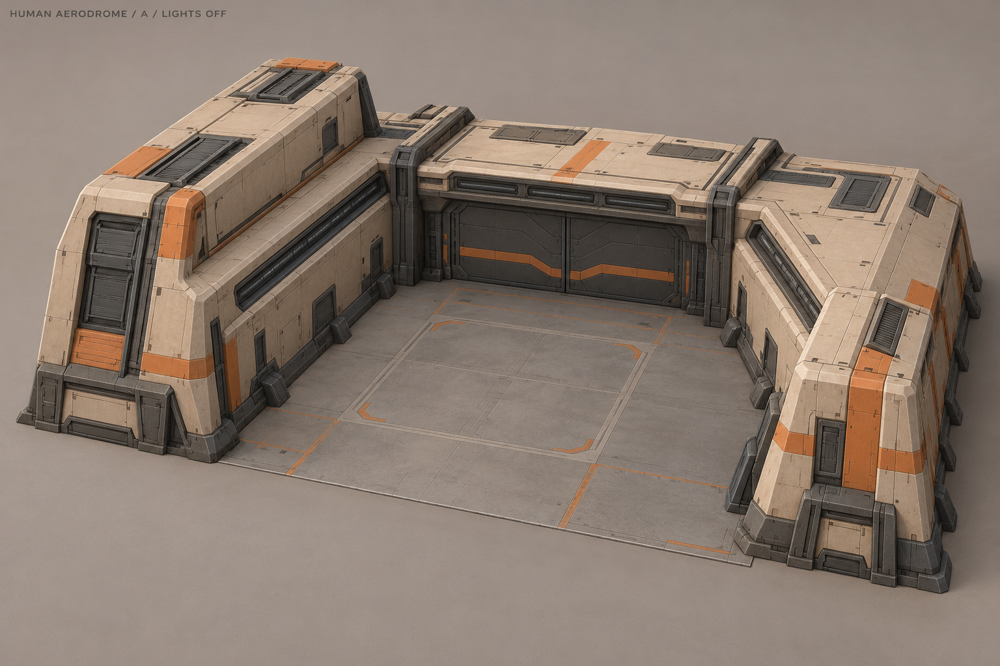
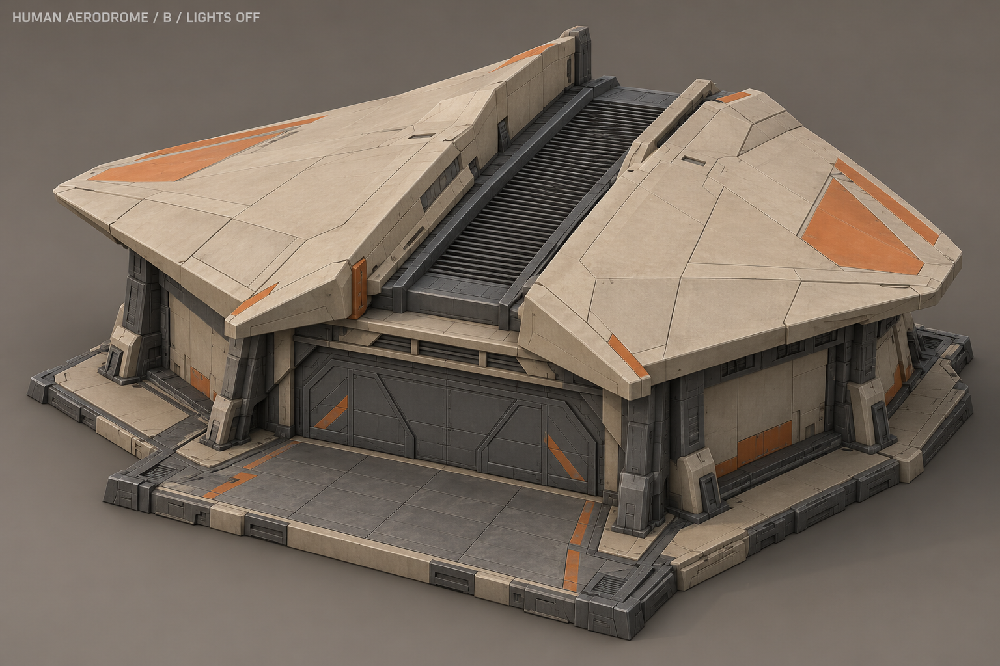
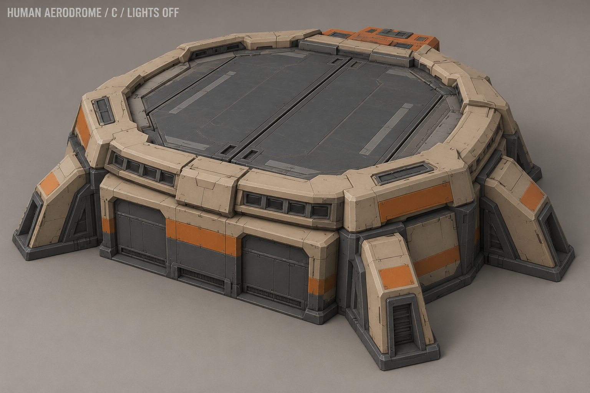
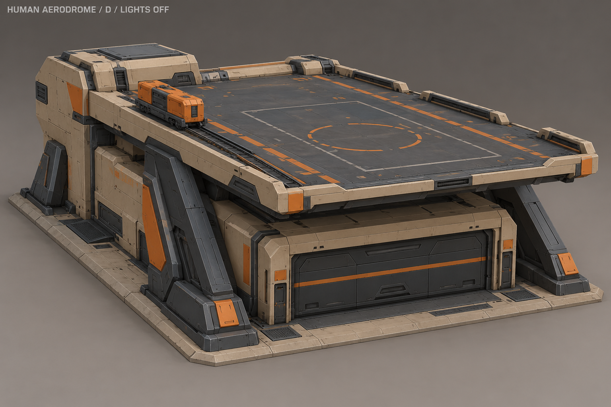
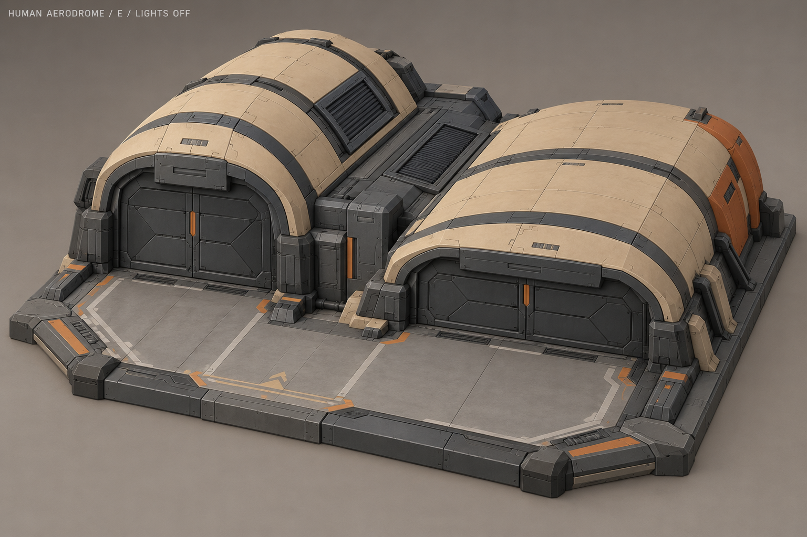
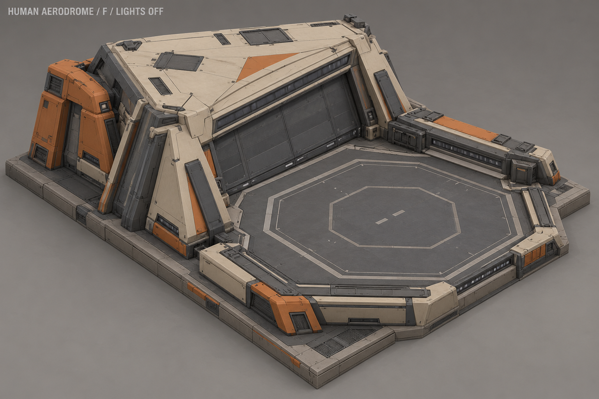
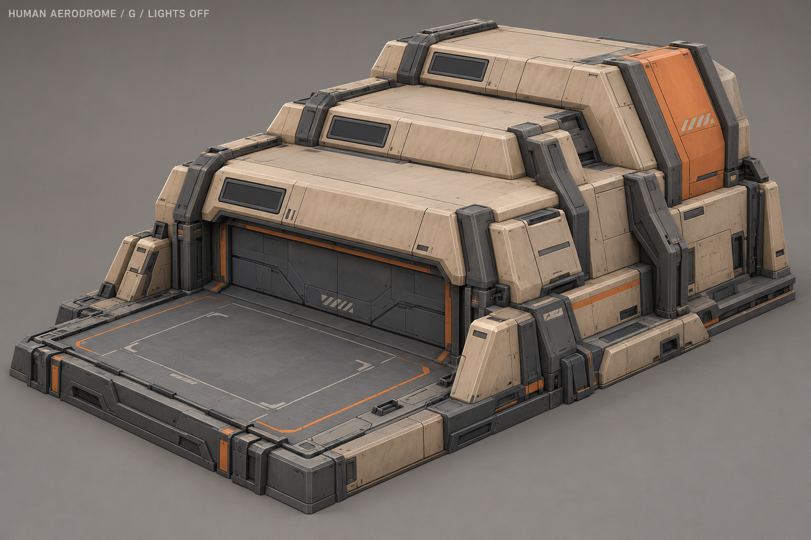
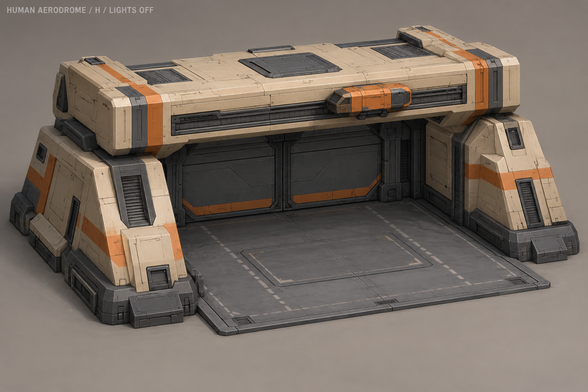

Аэродром людей · восемь направлений A–H
Разная архитектура: подкова, складчатая крыша, круглая выпускная палуба, консоль, двойной свод, диагональная площадка, ступени и поперечный мост. Выбран D «Консоль» с сигнальным маячком. Утверждённые ракурсы и паспорт.
Винтокрыл, перехватчик, транспортник и дрон РЭБ; модификации авиации. Предварительное пятно 4×4, требует оперативный центр.
Референсы: свет выключен, ворота и люки закрыты. Оранжевый — краска. Рабочий цикл раскрывается отдельно; открытие ангара на выпуск не входит в постоянную анимацию производства.
A «Подкова»

Низкая подкова вокруг передней площадки; крылья разной высоты.
Отдельная схема рабочего цикла
Световая волна по внутреннему ободу подковы.
Схема принципа, не вход для AI-моделирования и не готовый игровой клип.
B «Расщеплённое крыло»

Две крупные складчатые оболочки и смещённый центральный шов.
Отдельная схема рабочего цикла
Короткий наклон вентиляционной створки между оболочками.
Схема принципа, не вход для AI-моделирования и не готовый игровой клип.
C «Кольцевой ангар»

Гранёный круглый ангар с закрытой выпускной палубой сверху.
Отдельная схема рабочего цикла
Последовательность линз по плечу корпуса; люк открывается отдельно при выпуске.
Схема принципа, не вход для AI-моделирования и не готовый игровой клип.
D «Консоль»

Приподнятая палуба над низким ангаром, опирающаяся на диагональные фермы.
Отдельная схема рабочего цикла
Небольшая сервисная каретка ходит вдоль боковой направляющей палубы.
Схема принципа, не вход для AI-моделирования и не готовый игровой клип.
E «Двойной свод»

Два неравных свода с общей сервисной ложбиной и передней площадкой.
Отдельная схема рабочего цикла
Две вентиляционные панели поочерёдно приподнимаются.
Схема принципа, не вход для AI-моделирования и не готовый игровой клип.
F «Диагональ»

Клиновидный ангар и восьмигранная площадка делят квадрат по диагонали.
Отдельная схема рабочего цикла
Бегущая последовательность на диагональном фасаде и краю площадки.
Схема принципа, не вход для AI-моделирования и не готовый игровой клип.
G «Ступени»

Три смещённые террасы спускаются к передней лётной палубе.
Отдельная схема рабочего цикла
Световой цикл проходит по трём ступеням корпуса.
Схема принципа, не вход для AI-моделирования и не готовый игровой клип.
H «Поперечный мост»

Толстый поперечный корпус-мост на двух закрытых боковых опорах.
Отдельная схема рабочего цикла
Инспекционный модуль перемещается по передней горизонтальной направляющей.
Схема принципа, не вход для AI-моделирования и не готовый игровой клип.